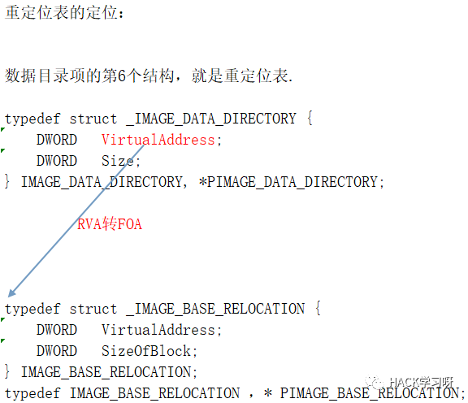
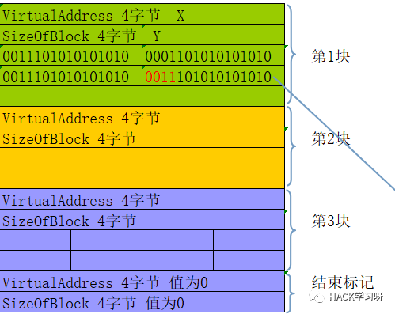
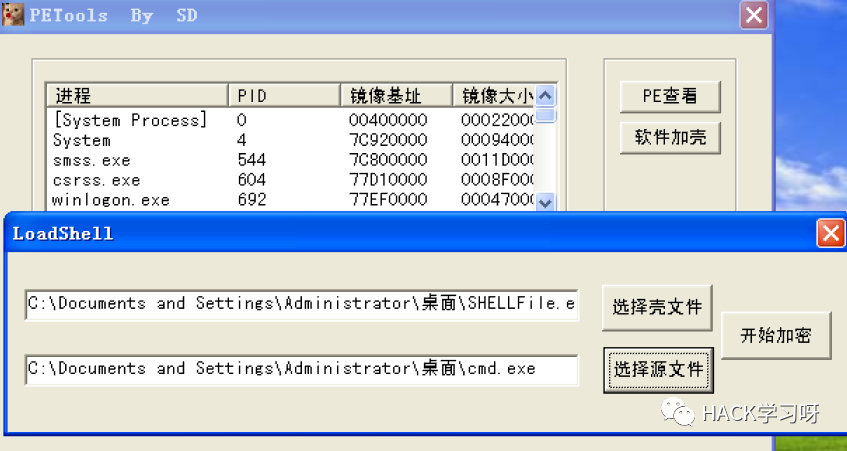
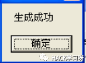
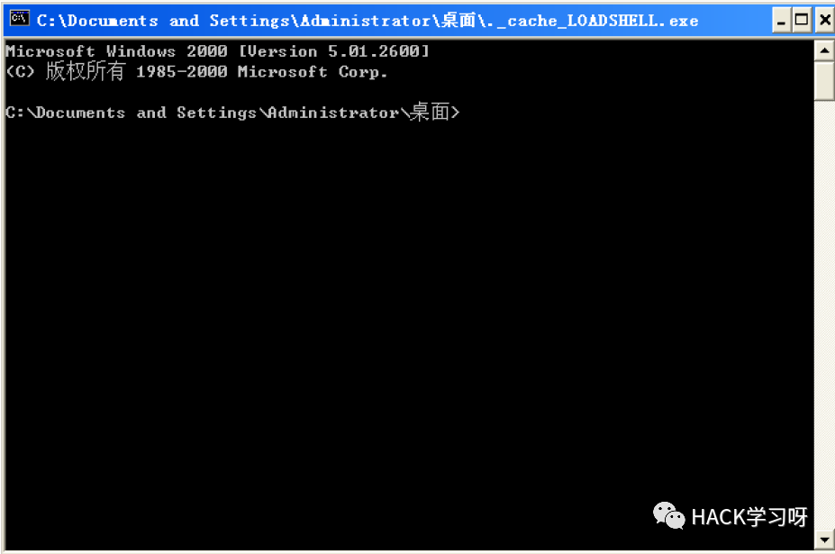
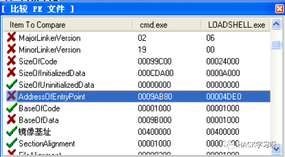
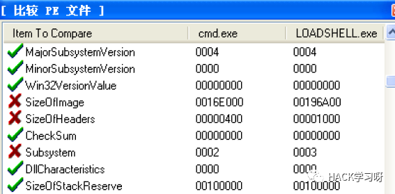

简单的加密壳实现
编译环境
xp + vc6
加壳过程
把源文件(被保护的exe),加密后放入到壳子程序的最后一个节里
实现代码
宏
壳子程序新增加节
参数说明:
path :要新增节文件的路径
n:要新增多少字节
LSADDRESS：得到新生成节的首地址
void addnewsec(IN LPSTR path,IN DWORD n,OUT LPVOID* LSADDRESS){LPVOID FileBuffer = NULL;LPVOID ImageBuffer = NULL;LPVOID NewBuffer = NULL;PIMAGE_DOS_HEADER pDosHeader = NULL;PIMAGE_NT_HEADERS pNTHeader = NULL;PIMAGE_FILE_HEADER pPEHeader = NULL;PIMAGE_OPTIONAL_HEADER32 pOptionHeader = NULL;PIMAGE_SECTION_HEADER pSectionHeader = NULL;DWORD Size = 0;FileToBigFileBuffer(path, n, &FileBuffer);if (!FileBuffer){printf("File->FileBuffer失败");return;}FileBufferToBigImageBuffer(FileBuffer,n,&ImageBuffer);if (!ImageBuffer){printf("FileBUffer->ImageBuffer失败");return;}pDosHeader = (PIMAGE_DOS_HEADER)ImageBuffer;pNTHeader = (PIMAGE_NT_HEADERS)((DWORD)pDosHeader + pDosHeader->e_lfanew);pPEHeader = (PIMAGE_FILE_HEADER)((DWORD)pNTHeader + 4);pOptionHeader = (PIMAGE_OPTIONAL_HEADER32)((DWORD)pPEHeader + IMAGE_SIZEOF_FILE_HEADER);pSectionHeader = (PIMAGE_SECTION_HEADER)((DWORD)pOptionHeader + pPEHeader->SizeOfOptionalHeader);PIMAGE_SECTION_HEADER ptempSectionHeader = pSectionHeader;for (int i = 0; i < pPEHeader->NumberOfSections; i++, ptempSectionHeader++);if ((pOptionHeader->SizeOfHeaders - ((DWORD)ptempSectionHeader - (DWORD)pDosHeader)) < 80){MessageBox(0,"开辟新节表空间不够",0,0);return;}memcpy(ptempSectionHeader, pSectionHeader,40);pPEHeader->NumberOfSections = (WORD)pPEHeader->NumberOfSections + 1;//printf("%x\n", pPEHeader->NumberOfSections);pOptionHeader->SizeOfImage = (DWORD)pOptionHeader->SizeOfImage + n;//printf("%x\n", pOptionHeader->SizeOfImage);ptempSectionHeader->Misc.VirtualSize = n;//printf("%x\n", ptempSectionHeader->Misc.VirtualSize);PIMAGE_SECTION_HEADER ptempSectionHeader1 = ptempSectionHeader-1;//判断内存大小和对齐后文件中大小，谁大加谁if (ptempSectionHeader1->Misc.VirtualSize > ptempSectionHeader1->SizeOfRawData){ptempSectionHeader->VirtualAddress = ptempSectionHeader1->VirtualAddress + ImageAlignment(ptempSectionHeader1->Misc.VirtualSize);}else{ptempSectionHeader->VirtualAddress = ptempSectionHeader1->VirtualAddress + ImageAlignment(ptempSectionHeader1->SizeOfRawData);}ptempSectionHeader->SizeOfRawData = FileAlignment(n);ptempSectionHeader->PointerToRawData = ptempSectionHeader1->PointerToRawData + ptempSectionHeader1->SizeOfRawData;ptempSectionHeader->Characteristics = pSectionHeader->Characteristics | ptempSectionHeader->Characteristics;Size = ImageBufferToNewBuffer(ImageBuffer, &NewBuffer);*LSADDRESS = (LPVOID)(ptempSectionHeader->VirtualAddress+(DWORD)ImageBuffer);if (Size == 0 || !NewBuffer){MessageBox(0,"ERROR(ImageBuffer->FileBuffer)",0,0);free(FileBuffer);free(ImageBuffer);return;}BOOL isok = MemeryTOFile(NewBuffer, Size, ENDPATH);if (isok == 0){MessageBox(0,"存盘失败",0,0);}pshellImageBuffer = ImageBuffer;free(NewBuffer);free(FileBuffer);return;}
加密程序
DWORD encrypto(IN LPSTR path,OUT LPVOID* FileBuffer){FILE* pFile;pFile = fopen(path, "rb");if (pFile == NULL){fclose(pFile);//关闭文件return 0;}else{fseek(pFile, 0, SEEK_END);DWORD fileSize = ftell(pFile);fseek(pFile, 0, SEEK_SET);char* p = (char *)malloc(fileSize*sizeof(char)); //分配内存，读取文件fread(p, sizeof(char), fileSize, pFile); //读取二进制到内存for (DWORD i = 0; i < fileSize; i++){p[i] = p[i] ^ 0xFF;}//写入二进制到文件*FileBuffer = p;fclose(pFile);//关闭文件return fileSize;}
}这里的加密算法可以更复杂,我只是简单的进行异或
真正将源文件加载到壳子中
DWORD addshellcodeTolastSection(LPSTR srcpath,LPSTR despath){LPVOID NewBuffer = NULL;LPVOID pFileBuffer = NULL;LPVOID LSADDRESS = NULL;int FileSize = encrypto(srcpath,&pFileBuffer);addnewsec(despath,FileSize,&LSADDRESS); //增加节的新文件已经存在ENDPATH中memcpy(LSADDRESS,pFileBuffer,FileSize);DWORD Size = ImageBufferToNewBuffer(pshellImageBuffer, &NewBuffer);BOOL isok = MemeryTOFile(NewBuffer, Size, ENDPATH);if (isok == 0){MessageBox(0,"存盘失败",0,0);}free(pshellImageBuffer);free(pFileBuffer);free(NewBuffer);return 1;}
用到的一些映像操作函数
DWORD ImageBufferToNewBuffer(IN LPVOID pImageBuffer, OUT LPVOID* pNewBuffer){if (!pImageBuffer){printf("PE文件读取失败");return 0;}if (*(PWORD)pImageBuffer != IMAGE_DOS_SIGNATURE){printf("不是有效的MZ头");free(pImageBuffer);return 0;}DWORD FileSize = 0;LPVOID ptempNewBuffer = NULL;PIMAGE_DOS_HEADER pDosHeader = NULL;PIMAGE_NT_HEADERS pNTHeader = NULL;PIMAGE_FILE_HEADER pPEHeader = NULL;PIMAGE_OPTIONAL_HEADER32 pOptionHeader = NULL;PIMAGE_SECTION_HEADER pSectionHeader = NULL;pDosHeader = (PIMAGE_DOS_HEADER)pImageBuffer;pNTHeader = (PIMAGE_NT_HEADERS)((DWORD)pDosHeader + pDosHeader->e_lfanew);pPEHeader = (PIMAGE_FILE_HEADER)((DWORD)pNTHeader + 4);pOptionHeader = (PIMAGE_OPTIONAL_HEADER32)((DWORD)pPEHeader + IMAGE_SIZEOF_FILE_HEADER);pSectionHeader = (PIMAGE_SECTION_HEADER)((DWORD)pOptionHeader + pPEHeader->SizeOfOptionalHeader);PIMAGE_SECTION_HEADER ptempSectionHeader = pSectionHeader;if (*(PDWORD)((DWORD)pImageBuffer + pDosHeader->e_lfanew) != IMAGE_NT_SIGNATURE){printf("不是有效的PE签名");free(pImageBuffer);return 0;}for (int i = 0; i < pPEHeader->NumberOfSections; i++, ptempSectionHeader++);ptempSectionHeader--;FileSize = ptempSectionHeader->PointerToRawData + ptempSectionHeader->SizeOfRawData;ptempNewBuffer = malloc(FileSize);if (!ptempNewBuffer){printf("申请pNewBuffer堆空间失败");return 0;}memset(ptempNewBuffer, 0, FileSize);memcpy(ptempNewBuffer, pImageBuffer, pOptionHeader->SizeOfHeaders);PIMAGE_SECTION_HEADER ptemp1SectionHeader = pSectionHeader;for (DWORD n = 0; n < pPEHeader->NumberOfSections; n++){memcpy((void*)((DWORD)ptempNewBuffer+ptemp1SectionHeader->PointerToRawData), (void*)((DWORD)pImageBuffer + ptemp1SectionHeader->VirtualAddress), ptemp1SectionHeader->SizeOfRawData);//printf("%x\n", ptemp1SectionHeader->SizeOfRawData);ptemp1SectionHeader++;}*pNewBuffer = ptempNewBuffer;ptemp1SectionHeader = NULL;return FileSize;}DWORD MemeryTOFile(IN LPVOID pMemBuffer, IN size_t size, OUT LPSTR lpszFile){FILE* pFile = NULL;if (!pMemBuffer){printf("读取内存失败");return 0;}pFile = fopen(lpszFile, "wb");if (!pFile){printf("创建exe失败");return 0;}size_t n = fwrite(pMemBuffer, size, 1, pFile);if (!n){printf("存盘失败");free(pMemBuffer);fclose(pFile);pFile = NULL;return 0;}fclose(pFile);pFile = NULL;return 1;}
解壳过程
解壳过程就是编写壳子的过程,因为解壳程序都在壳子程序中,也是最关键的一环
实现代码
一些要用到的函数:内存对齐，文件对齐,拉伸过程等
DWORD FileAlignment(int n){DWORD i;if (n % 0x200 != 0){i = n / 0x200 + 1;i = i * 0x200;return i;}else{i = n / 0x200;i = i * 0x200;return i;}}DWORD ImageAlignment(int n){DWORD i;if (n % 0x1000 != 0){i = n / 0x1000 + 1;i = i * 0x1000;return i;}else{i = n / 0x1000;i = i * 0x1000;return i;}}DWORD RvaToFoa(IN LPSTR PATH,IN DWORD rva)//参数为内存偏移，返回文件偏移{LPVOID FileBuffer = NULL;LPVOID ImageBuffer = NULL;DWORD Foa = 0;PIMAGE_DOS_HEADER pDosHeader = NULL;PIMAGE_NT_HEADERS pNTHeader = NULL;PIMAGE_FILE_HEADER pPEHeader = NULL;PIMAGE_OPTIONAL_HEADER32 pOptionHeader = NULL;PIMAGE_SECTION_HEADER pSectionHeader = NULL;FileToFileBuffer(PATH, &FileBuffer);if (!FileBuffer){printf("File->FileBuffer失败");return 0;}FileBufferToImageBuffer(FileBuffer, &ImageBuffer);if (!ImageBuffer){printf("FileBUffer->ImageBuffer失败");return 0;}pDosHeader = (PIMAGE_DOS_HEADER)ImageBuffer;pNTHeader = (PIMAGE_NT_HEADERS)((DWORD)pDosHeader + pDosHeader->e_lfanew);pPEHeader = (PIMAGE_FILE_HEADER)((DWORD)pNTHeader + 4);pOptionHeader = (PIMAGE_OPTIONAL_HEADER32)((DWORD)pPEHeader + IMAGE_SIZEOF_FILE_HEADER);pSectionHeader = (PIMAGE_SECTION_HEADER)((DWORD)pOptionHeader + pPEHeader->SizeOfOptionalHeader);PIMAGE_SECTION_HEADER ptempSectionHeader = pSectionHeader;PIMAGE_SECTION_HEADER ptempSectionHeader1 = pSectionHeader;for (int i = 0; i < pPEHeader->NumberOfSections; i++, ptempSectionHeader++);//printf("%x\n", FileAlignment(((DWORD)ptempSectionHeader - (DWORD)ImageBuffer)));if (rva <= FileAlignment(((DWORD)ptempSectionHeader - (DWORD)ImageBuffer))){Foa = rva;free(FileBuffer);free(ImageBuffer);return Foa;}for (int k = 0; k < pPEHeader->NumberOfSections-1; k++){if (ptempSectionHeader1->VirtualAddress < rva && rva < (ptempSectionHeader1 + 1)->VirtualAddress){Foa = ptempSectionHeader1->PointerToRawData + (rva - ptempSectionHeader1->VirtualAddress);free(FileBuffer);free(ImageBuffer);return Foa;}if (ptempSectionHeader1->VirtualAddress == rva){Foa = ptempSectionHeader1->PointerToRawData;free(FileBuffer);free(ImageBuffer);return Foa;}ptempSectionHeader1++;}if (ptempSectionHeader1->VirtualAddress <= rva){Foa = ptempSectionHeader1->PointerToRawData + (rva - ptempSectionHeader1->VirtualAddress);free(FileBuffer);free(ImageBuffer);return Foa;}free(FileBuffer);free(ImageBuffer);return 0;}DWORD FileToFileBuffer(IN LPSTR lpszFile, OUT LPVOID* FileBuffer){FILE* pFile = NULL;LPVOID ptempFileBuffer = NULL;DWORD fileSize = 0;//打开文件pFile = fopen(lpszFile, "rb");//判断文件是否打开if (!pFile){printf("无法打开文件");return 0;}//malloc文件大小fseek(pFile, 0, SEEK_END);fileSize = ftell(pFile);fseek(pFile, 0, SEEK_SET);ptempFileBuffer = malloc(fileSize);memset(ptempFileBuffer,0,fileSize);//判断是否申请空间成功if (!ptempFileBuffer){printf("分配空间失败");fclose(pFile);return 0;}size_t n = fread(ptempFileBuffer, fileSize, 1, pFile);//判断是否拷贝成功if (!n){printf("拷贝数据失败");free(ptempFileBuffer);fclose(pFile);return 0;}*FileBuffer = ptempFileBuffer;ptempFileBuffer = NULL;fclose(pFile);return fileSize;}DWORD FileBufferToImageBuffer(IN LPVOID pFileBuffer, OUT LPVOID* pImageBuffer){LPVOID p1ImageBuffer = NULL;PIMAGE_DOS_HEADER pDosHeader = NULL;PIMAGE_NT_HEADERS pNTHeader = NULL;PIMAGE_FILE_HEADER pPEHeader = NULL;PIMAGE_OPTIONAL_HEADER32 pOptionHeader = NULL;PIMAGE_SECTION_HEADER pSectionHeader = NULL;pDosHeader = (PIMAGE_DOS_HEADER)pFileBuffer;pNTHeader = (PIMAGE_NT_HEADERS)((DWORD)pFileBuffer + pDosHeader->e_lfanew);pPEHeader = (PIMAGE_FILE_HEADER)((DWORD)pNTHeader + 4);pOptionHeader = (PIMAGE_OPTIONAL_HEADER32)((DWORD)pPEHeader + IMAGE_SIZEOF_FILE_HEADER);pSectionHeader = (PIMAGE_SECTION_HEADER)((DWORD)pOptionHeader + pPEHeader->SizeOfOptionalHeader);p1ImageBuffer = malloc(pOptionHeader->SizeOfImage);if (!p1ImageBuffer){printf("申请ImageBuffer堆空间失败");return 0;}memset(p1ImageBuffer , 0 , pOptionHeader->SizeOfImage);memcpy(p1ImageBuffer, pFileBuffer, pOptionHeader->SizeOfHeaders);PIMAGE_SECTION_HEADER ptempSectionHeader = pSectionHeader;for (int k = 0; k < pPEHeader->NumberOfSections; k++){memcpy((void*)((DWORD)p1ImageBuffer+ ptempSectionHeader->VirtualAddress), (void*)((DWORD)pFileBuffer + ptempSectionHeader->PointerToRawData), ptempSectionHeader->SizeOfRawData);//printf("%x\n", ptempSectionHeader->SizeOfRawData);ptempSectionHeader++;}*pImageBuffer = p1ImageBuffer;ptempSectionHeader = NULL;return pOptionHeader->SizeOfImage;}
关键代码,思路最重要
一:获取自身文件的路径:因为我们需要将自身文件展开到内存来进行操作.
CHAR path[MAX_PATH];DWORD dwTempImageBaseSrc = NULL;HMODULE hm=GetModuleHandle(NULL);GetModuleFileName(hm,path,sizeof(path));&pzzFileBuffer);
用到的API: GetModuleHandle GetModuleFileName
二:解密.
for (DWORD i = 1; i < pPEHeader->NumberOfSections; i++, pSectionHeader++); //定位到最后一个节 源文件在这里CHAR* SrcMoule = (CHAR*)((DWORD)pzzFileBuffer + pSectionHeader->PointerToRawData);//解密for(k = 0;k<pSectionHeader->SizeOfRawData;k++){SrcMoule[k] = SrcMoule[k] ^ 0xFF;}
三:将解密后的源文件，在内存中拉伸
FileBufferToImageBuffer(SrcMoule,&pImageBuffer);
四:以挂起方式创建一个进程
STARTUPINFO ie_si = {0};PROCESS_INFORMATION ie_pi;TCHAR SrcBuffer[256] = {0};sprintf(SrcBuffer,"%s",path);= sizeof(ie_si);//以挂起的方式创建进程NULL,SrcBuffer,NULL,NULL,FALSE,CREATE_SUSPENDED,NULL,NULL,&ie_si,&ie_pi);
主要目的是为了起后面的源文件,创建进程的路径就写自己本身
关键参数:CREATE_SUSPENDED (以挂起方式创建)
用到的API:CreateProcess
五:卸载外壳程序
API:ZwUnmapViewOfSection
NTSTATUS ZwUnmapViewOfSection(IN HANDLE ProcessHandle,IN PVOID BaseAddress );
这个函数在 wdm.h 里声明，它的功能是卸载进程的内存镜像（Image Buffer），内存镜像是指进程4GB虚拟地址空间中从 ImageBase 开始，长度为 SizeOfImage 的内存。
wdm.h 这个头文件需要安装wdk 微软链接 https://docs.microsoft.com/zh-cn/windows-hardware/drivers/download-the-wdk
也可以通过ntdll这个dll,将ZwUnmapViewOfSection函数通过GetProcAddress找到函数地址,再把函数地址赋给函数名,并不直接调用
pfnZwUnmapViewOfSection ZwUnmapViewOfSection = NULL;HMODULE hModule = LoadLibrary("ntdll.dll");if (hModule){ZwUnmapViewOfSection = (pfnZwUnmapViewOfSection)GetProcAddress(hModule, "ZwUnmapViewOfSection");if (ZwUnmapViewOfSection){if (ZwUnmapViewOfSection((unsigned long)ie_pi.hProcess, dwImageBaseShell)){ // 卸载掉 壳子程序自身的ImageBase 地址printf("ZwUnmapViewOfSection success\n");}}FreeLibrary(hModule);}
LoadLibrary是加载一个dll到进程中,如果进程有这个dll,直接返回该dll的句柄;如果没有这个dll,就先把dll贴到进程空间,再返回该dll的句柄
参考:https://github.com/smallzhong/ycpack
FARPROC GetProcAddress(HMODULE hModule, // DLL模块句柄LPCSTR lpProcName // 函数名);
六:分配空间
FirstAD = VirtualAllocEx(ie_pi.hProcess,(LPVOID)pSrcOptionHeader->ImageBase,pSrcOptionHeader->SizeOfImage,MEM_RESERVE | MEM_COMMIT,PAGE_EXECUTE_READWRITE);if(FirstAD == NULL){if(pSrcOptionHeader->DataDirectory[5].VirtualAddress == 0 || pSrcOptionHeader->DataDirectory[5].Size ==0){MessageBox(0,"shibai",0,0);return;}else{DWORD RVA_Data;WORD reloData;PWORD Location = NULL;DWORD NumberOfRelocation = 0;dwTempImageBaseSrc = pSrcOptionHeader->ImageBase + 0x50000;DWORD fOA = RvaToFoa(path,pSrcOptionHeader->DataDirectory[5].VirtualAddress);PIMAGE_BASE_RELOCATION pRelocationDirectory = (PIMAGE_BASE_RELOCATION)((DWORD)SrcMoule + fOA);//申请空间VirtualAllocEx(ie_pi.hProcess, (LPVOID)dwTempImageBaseSrc,pSrcOptionHeader->SizeOfImage,MEM_RESERVE | MEM_COMMIT,PAGE_EXECUTE_READWRITE);pSrcOptionHeader->ImageBase = (DWORD)dwTempImageBaseSrc;WriteProcessMemory(ie_pi.hProcess, (LPVOID)dwTempImageBaseSrc, pImageBuffer, pSrcOptionHeader->SizeOfImage, NULL);while(pRelocationDirectory->SizeOfBlock && pRelocationDirectory->VirtualAddress){NumberOfRelocation = (pRelocationDirectory->SizeOfBlock - 8)/2;// 每个重定位块中的数据项的数量Location = (PWORD)((DWORD)pRelocationDirectory + 8); // 加上8个字节for(DWORD i=0;i<NumberOfRelocation;i++){if(Location[i] >> 12 != 0){ //判断是否是垃圾数据// WORD类型的变量进行接收reloData = (Location[i] & 0xFFF); //这里进行与操作 只取4字节 二进制的后12位RVA_Data = pRelocationDirectory->VirtualAddress + reloData; //这个是RVA的地址fOA = RvaToFoa(SrcMoule,RVA_Data);*(PDWORD)((DWORD)SrcMoule+(DWORD)fOA) = *(PDWORD)((DWORD)SrcMoule+(DWORD)fOA) + dwTempImageBaseSrc - pSrcOptionHeader->ImageBase; // 任意位置 - Origin ImageBase}}pRelocationDirectory = (PIMAGE_BASE_RELOCATION)((DWORD)pRelocationDirectory + (DWORD)pRelocationDirectory->SizeOfBlock); //上面的for循环完成之后，跳转到下个重定位块 继续如上的操作}}}else{WriteProcessMemory(ie_pi.hProcess, (LPVOID)pSrcOptionHeader->ImageBase, pImageBuffer,pSrcOptionHeader->SizeOfImage,NULL);}
这里有一个判断,就是如果我们按照他本身的ImageBase来分配空间的话,有可能分配失败,可能这个位置已经被占用,这时如果源文件还有重定位表,就可以分配另一块内存并修复重定位表,如果没有重定位表则直接返回失败.
一点重定位表的理解:人人都想抢0x400000 这个位置,但总有人抢不到,抢不到的人,比如某一个dll,就以模块对齐的方式贴在了这个位置的后面,而有一些地址随着ImageBase的偏移而偏移,模块提供了这张表,记录了哪些地址是跟ImageBase息息相关的,当我们移动了ImageBase后,修复这张表,地址依旧准确
重定位表的定位与结构:


七:修改外壳程序的上下文
//修改外壳程序的ContextCONTEXT context;= CONTEXT_FULL;BOOL ok = ::GetThreadContext(ie_pi.hThread,&context);baseAddress = (CHAR*)context.Ebx+8;DWORD dwEntryPoint = pSrcOptionHeader->AddressOfEntryPoint;= dwEntryPoint+(DWORD)dwBufferImageBaseSrc;DWORD theOep = context.Ebx + 8;DWORD dwBytes=0;&theOep, &dwBufferImageBaseSrc,4, &dwBytes);BOOL WriteProcessMemory(HANDLE hProcess,LPVOID lpBaseAddress,LPVOID lpBuffer,DWORD nSize,LPDWORD lpNumberOfBytesWritten);
八:记得恢复进程
//恢复执行&context);//记得恢复线程ResumeThread(ie_pi.hThread);ExitProcess(0);return;
查看效果
选取的是一个cmd作为源文件



用LoadPE进行比较


程序入口和镜像大小都完全改变,已经在壳子中看不到任何cmd的影子
至此加密壳子实现完成

推荐阅读：
本月报名可以参加抽奖送暗夜精灵6Pro笔记本电脑的优惠活动

点赞，转发，在看
原创投稿作者：Buffer